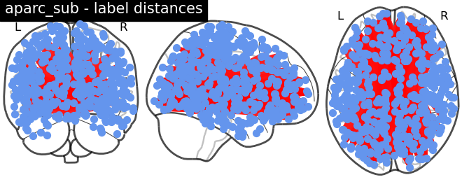

Note
Go to the end to download the full example code
Compute Label Distances¶
Script show how to compute and visualize distance between label center of masses for a given subject.
Author: Praveen Sripad <pravsripad@gmail.com>
Reading labels from parcellation...
read 226 labels from /Users/praveen.sripad/nanna_data/mne_data/MNE-sample-data/subjects/sample/label/lh.aparc_sub.annot
read 224 labels from /Users/praveen.sripad/nanna_data/mne_data/MNE-sample-data/subjects/sample/label/rh.aparc_sub.annot
Max distance between ROIs 169.0
import os.path as op
from jumeg.connectivity import get_label_distances
from surfer import Brain
from nilearn import plotting
from mne.datasets import sample
data_path = sample.data_path()
subjects_dir = op.join(data_path, 'subjects')
subject = 'sample'
parc = 'aparc_sub'
# compute the distances between COM's of the labels
rounded_coms, coords, coms_lh, coms_rh = get_label_distances(subject,
subjects_dir,
parc=parc)
# np.save('%s_distances.npy' % subject, rounded_com)
# get maximum distance between ROIs
print('Max distance between ROIs', rounded_coms.ravel().max())
# do plotting using PySurfer
brain = Brain(subject, hemi='both', surf='inflated', subjects_dir=subjects_dir)
brain.add_foci(coms_lh, coords_as_verts=True, hemi='lh')
brain.add_foci(coms_rh, coords_as_verts=True, hemi='rh')
brain.save_montage('%s_%s_coms.png' % (subject, parc),
order=['lat', 'ven', 'med'],
orientation='h', border_size=15, colorbar='auto',
row=-1, col=-1)
brain.close()
# show the label ROIs using Nilearn plotting
fig = plotting.plot_connectome(rounded_coms, coords,
edge_threshold='99%', node_color='cornflowerblue',
title='%s - label distances' % parc)
fig.savefig('fig_%s_label_distances.png' % parc)
Total running time of the script: ( 0 minutes 6.340 seconds)